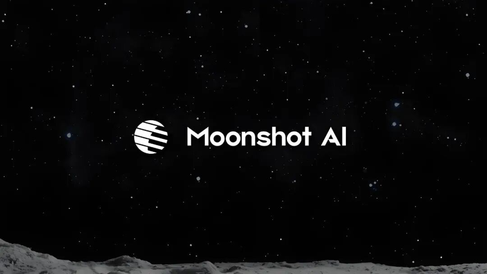
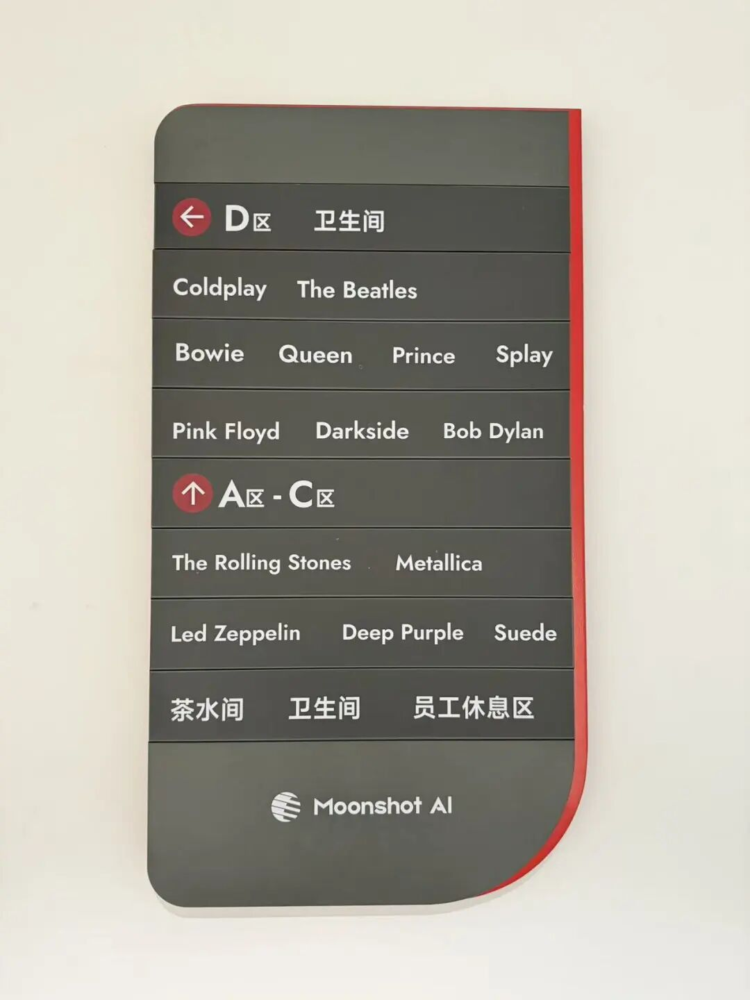
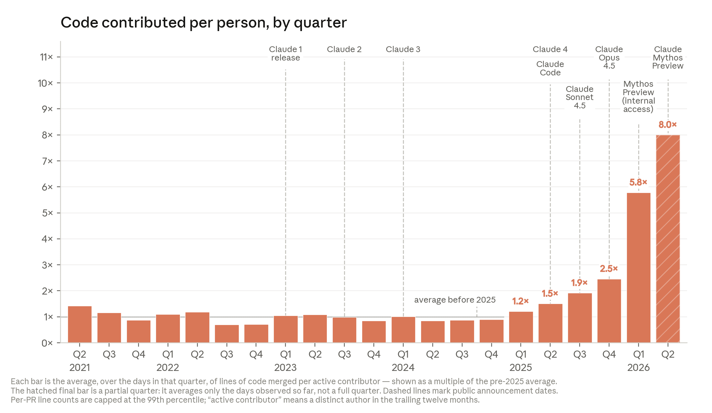

How leading AI companies are structured and what organizational patterns are emerging in the AI-native era. Primary cases: Moonshot AI (Kimi) and Anthropic's account of AI increasingly accelerating AI development itself.
Founded by five co-founders from Tsinghua University, Moonshot AI built Kimi — a frontier-model company organized around a single high-stakes bet on model capability rather than traditional corporate departments.
Strategy evolution: consumer chatbot → open-source models → agent products (Kimi Agent, Kimi Code, Kimi CLI).
When DeepSeek launched in early 2025, it reshuffled the Chinese AI landscape:

Kimi's highest hiring standard is taste — an aesthetic and intellectual sense that is impossible to quantify but pervasive in the product, the naming conventions, the code.
A key selection criterion: can this person adapt to a completely new domain?
Moonshot AI has deliberately "flattened" itself — what the article calls a "two-dimensional foil" from The Three-Body Problem: a weapon that collapses 3D space into 2D, eliminating depth.
Tradeoff: Without top-down OKRs, some employees experience "weightlessness." Extreme flatness historically hits decision bottlenecks at ~500 people. The company acknowledges this risk.
Employees increasingly prefer interacting with AI over humans (simpler, more reliable). Product managers run agent swarms — strategy agent, translation agent, competitor monitoring agent — compressing multi-day multi-person work into hours. The model is both the goal (what they're building) and the tool (how they work).
| Pattern | Description |
|---|---|
| Flat hierarchy | Few or no management layers; direct communication |
| Agent-augmented work | Individual contributors manage fleets of AI agents |
| Generalization over specialization | Cross-functional contributors over narrow specialists |
| Model-as-product AND model-as-tool | The same model being built is used internally |
| Trust through dense peer networks | Referral-heavy hiring builds implicit trust without process |
| Anti-OKR | Outcome ownership is personal, not managed via metric systems |

Anthropic's recursive self-improvement clipping describes the frontier-lab version of the same pattern: the model is not only the product, but part of the system that creates the next product.

| Work layer | Before AI acceleration | After AI acceleration |
|---|---|---|
| Implementation | Humans write most code and scripts | AI drafts, edits, debugs, and runs tool loops |
| Experimentation | Humans queue and inspect each run | AI helps generate, run, and triage more experiments |
| Review | Human review is one step in the process | Human review becomes a throughput bottleneck |
| Strategy | Humans choose research directions | Humans focus on taste, priority, and verification |
This points to Recursive Self-Improvement: even if full self-improvement never arrives, AI-native labs become more sensitive to evaluation quality, compute capacity, safety review, and organizational bottleneck management.
Kimi's engineers developed MoBA (Mixture of Block Attention) to enable 128K+ context (vs the 4K industry standard in 2023). Three retreats over ~18 months — the project was never killed.
| Version | Outcome |
|---|---|
| MoBA v0.5 | Required rewriting the training framework mid-run — too costly, shelved |
| MoBA v1 | Worked on small models, failed on large ones (loss spikes) |
| MoBA v2 | Required a "saturation rescue" with experts from across the company; changed attention in final layers to fix long-summary tasks — succeeded |